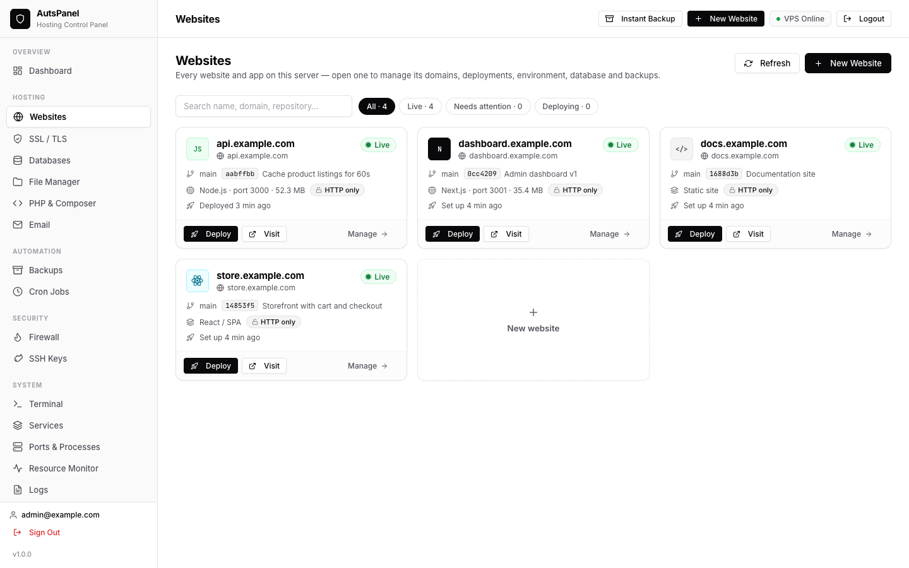
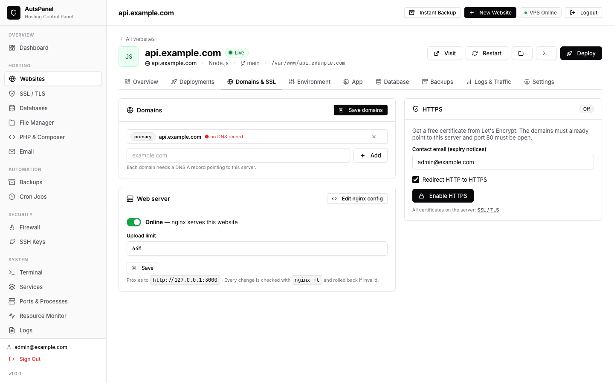
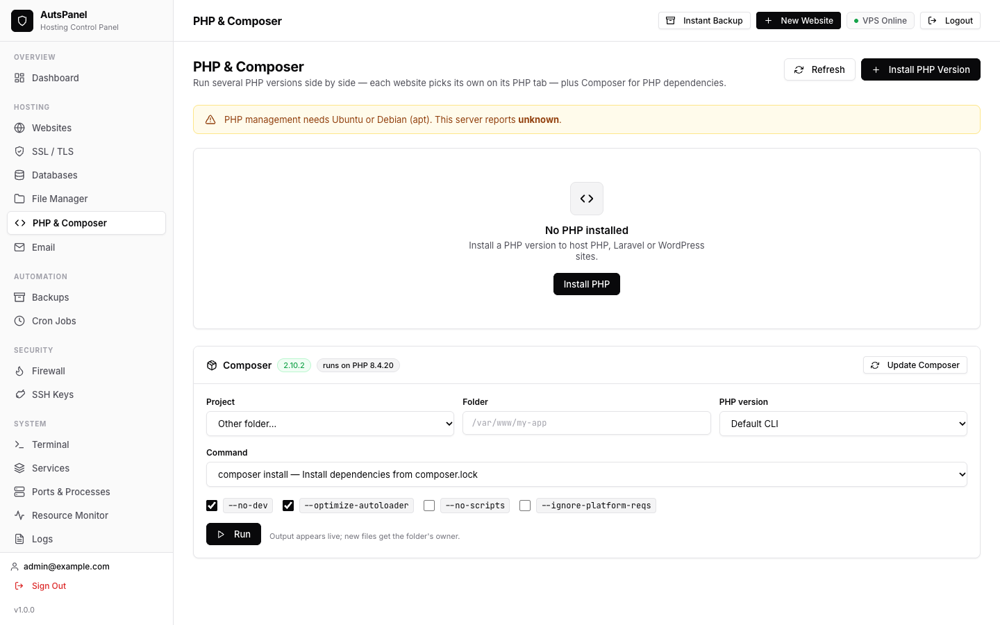
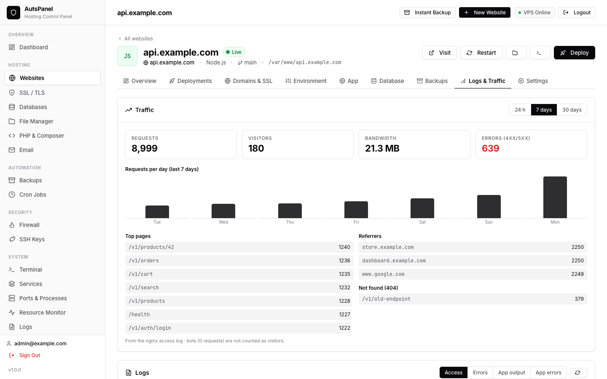

The free cPanel alternative
built for modern apps
AutsPanel turns any Ubuntu or Debian VPS into your own hosting platform. Deploy Node.js, Next.js, React, Laravel, PHP and WordPress from Git — with SSL, databases, backups and a firewall built in.
$ git clone https://github.com/auts-tech/backup-vps.git /opt/backup-vps && cd /opt/backup-vps && cp .env.example .env && nano .env && sudo bash setup.sh
Runs the open-source tools you already trust
All the hosting tools — without the hosting bill
The features you know from cPanel, Plesk and aaPanel, rebuilt around how developers ship today: Git, environment variables, processes and safe rollbacks.
Push to deploy. Roll back in one click.
Signed webhooks for GitHub, GitLab, Gitea and Bitbucket. Every deployment runs as a checklist with a live log and is kept in the history.
Free SSL, renewed for you
Let's Encrypt for every domain, with a DNS check first and an HTTPS redirect.
Any stack, detected
Paste a repository: build and start commands, web root, port and PHP version are filled in.
Backups that restore
Database, files and .env of each site on a schedule — restored with a live log.
A firewall that won't lock you out
UFW rules for ports and IPs. SSH and your way into the panel are allowed first.
Every PHP version, per website
PHP 5.6 to 8.x side by side, Composer built in, and Laravel's scheduler as a switch.
Databases, linked to their sites
MariaDB/MySQL with users, a table browser and SQL console — and existing databases found in your config.
Every site gets its own control room
Domains, deployments, environment, app, PHP, database, backups and logs of a website live together on one page.
Deploy on push. Roll back in one click.
Every deployment pulls, builds, restarts and health-checks your app as one job with a live log — and stays in the history, so any earlier commit is a click away.
- Signed webhooks for GitHub, GitLab, Gitea and Bitbucket
- Editable deploy script per website
- Discord and email alerts when a deploy fails

Paste a repository. The rest is filled in.
AutsPanel inspects the repository before creating anything and recognises Next.js, React, Laravel, PHP, Python and static sites.
- Folder and free port suggested — all editable
- Live DNS check before HTTPS
- Database and .env credentials in the same step

Domains and HTTPS without config files.
Add domains and aliases, see whether each one points to your server, and issue a free certificate. Every nginx change is tested and rolled back if it would fail.
- Let's Encrypt with automatic renewal
- Take a site offline, change web root or upload limit
- Full nginx editor for advanced setups

Edit .env safely.
A table with secrets masked, or the raw file. Comments and order are kept, and keys missing from .env.example are pointed out.
- Secrets hidden until revealed
- Save & restart, or Save & cache config for Laravel
- Database credentials written for you

Processes that stay up.
Node.js, Next.js and Python apps run under PM2, restart if they crash and come back after a reboot. Change the start command or port — nginx follows.
- Status, uptime, CPU, memory and restarts
- Output and error logs
- Crash output shown right after a deploy

Every PHP version, side by side.
Install PHP 5.6 to 8.x, pick a version per website, manage extensions and php.ini, and run Composer with live output.
- Per-site PHP-FPM version
- Checksum-verified Composer
- Laravel scheduler as a switch

Know what your sites are doing.
Requests, visitors, bandwidth, top pages, referrers and 404s per website — straight from the nginx access log, no tracking script.
- Last 24 hours, 7 or 30 days
- Access, error and app logs
- Disk usage per site

From a fresh VPS to a live site in minutes
AutsPanel is one lightweight Node.js service that drives standard tools — nginx, PM2, PHP-FPM, MariaDB, certbot, UFW — and keeps them consistent. Read the architecture.
Install
Run the installer on a fresh Ubuntu or Debian server and open the dashboard on port 9090.
Create a website
Paste a Git URL or pick WordPress. Folder, port, build and start commands are suggested.
Push your code
A webhook deploys every push. Watch the live log; roll back with one click.
Relax
Certificates renew, backups run on schedule, crashed apps restart, alerts tell you if anything fails.
Why pay per account for your own server?
Commercial panels are licensed by accounts or domains. AutsPanel is MIT-licensed and free for unlimited websites.
cPanel & WHM
- Priced by number of accounts
- Proprietary, closed source
- Git deploys through .cpanel.yml
- Best for selling shared hosting
AutsPanel
- MIT open source — no paid tier
- Push-to-deploy with rollback built in
- Node.js, React, Laravel, PHP & WordPress
- SSL, backups, firewall and databases included
Plesk
- Web Admin up to 10 domains, Web Pro up to 30
- Proprietary, closed source
- Git and Node.js through extensions
- Best for Windows servers
Based on each vendor's public information in October 2026 — check the vendor for current prices and editions.
Built in the open. Free for everyone.
Use AutsPanel for personal sites, client work or your company — no paid tier, no license server, no telemetry. Read every line, change what you need, and contribute back.
- Plain Node.js and vanilla JavaScript — no build step
- Ordinary nginx, PM2 and PHP configs: remove the panel and your sites keep running
- Issues, ideas and pull requests welcome
The AutsPanel source code: a free, open-source hosting control panel for Ubuntu & Debian VPS.
Questions, answered
Is AutsPanel really free?
Yes. AutsPanel is open source under the MIT license. There is no paid tier, no per-account or per-domain license, and no feature behind a paywall. You only pay for your VPS.
Which servers does it run on?
Ubuntu 20.04, 22.04 and 24.04 LTS and Debian, on any VPS provider (Hetzner, Contabo, DigitalOcean, Linode, AWS Lightsail, Vultr…). It needs root access; 1 GB of RAM is enough for the panel and a few small sites, 2 GB or more is recommended for Node.js builds.
Can it host Node.js, Next.js and React apps?
Yes — that is what it is built for. Node.js and Next.js apps run under PM2 behind nginx; React, Vite and Vue apps are built on deploy and served as static files with a single-page-app fallback, so client-side routes never 404.
Does it support PHP, Laravel and WordPress?
Yes. Install PHP versions from 5.6 to 8.x side by side, deploy Laravel with Composer and migrations, and install WordPress in one click with its own database.
Can I move my sites from cPanel or aaPanel?
Yes. Create the website in AutsPanel, upload your files and import your database dump, then switch the DNS record. The migration guide walks through it step by step.
What happens to my sites if I remove AutsPanel?
They keep running. AutsPanel manages standard tools — nginx, PM2, PHP-FPM, MariaDB, certbot — and writes ordinary config files, so nothing depends on the panel being installed.
How do I update AutsPanel?
When a new version is published, the panel shows an update notice. Updating pulls the new version, installs dependencies, checks every file and rolls back automatically if anything fails.
Your server. Your sites. No license fees.
Install AutsPanel on a fresh VPS and deploy your first app in minutes. Free and open source, forever.